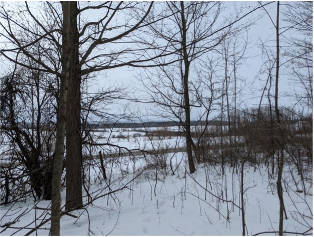

Introduction
When one thinks of conservation efforts, they probably imagine preservation of natural spaces and indigenous flora and fauna. A lesser known, yet nonetheless important, aspect of conservation planning is the scenic aspect. Breathtaking views, be they of mountain peaks or of rolling fields, are a critical aspect of our interaction with the natural landscape, and it would be a disservice to future generations to let them disappear. In this analysis, I investigate the effects of using different types of Digital Elevation Models in viewshed analyses, hoping this information will be valuable to conservation planners seeking to preserve scenic views.
Background
You don’t have to go far to see the importance of scenic views in conservation efforts. Middlebury’s own Town Plan includes a section on “scenic resources management” which enumerates a number of vistas that are critical to the character of the town (Planning Commission, 2017). The nearby town of Monkton commissioned a 27-page-long report inventorying their scenic views for planning purposes (Addison County RPC, 2016). And in a previous winter term class at Middlebury College, students identified scenic features in the Town of Middlebury as a part of a conservation plan they created for the town (Anixter et al., 2013a).
Although scenic views are a subjective matter, planners – including the authors of the Monkton report and the student conservation plan – still employ GIS methods to aid in the identification of prime viewing locations. In particular, to determine what can be seen from a given location, a planner might conduct a viewshed analysis (Addison County RPC, 2016).
A viewshed analysis determines whether a raster of points in a Digital Elevation Model (DEM) are in the line of sight from a given viewpoint(s) (Addison County RPC, 2016). There are more sophisticated viewshed tools, but the basic version outputs a binary raster with a 1 where a location is visible and a 0 where a location is not visible (Cuckovic, 2016). While viewsheds provide planners with a seemingly more objective way of determining prime viewing locations, there are plenty of errors inherent to this type of analysis.
In this report, we will investigate the sensitivity of viewshed analyses on Middlebury College lands to the choice of DEM. This is a highly relevant parameter to investigate, because whether a given point is visible from a given viewpoint depends entirely on the elevation data in the DEM. Furthermore, planners are not consistent in the DEMs they choose for their analyses. For example, the authors of the Monkton report used a Digital Terrain Model (DTM) in their analysis, completely ignoring forest cover (Addison County RPC, 2016). On the other hand, the Middlebury students attempted to account for forest cover by adding 15 meters to a DTM where vegetation was present, regardless of whether that vegetation was actually trees or whether the trees were actually that tall (Anixter et al., 2013b). Other authors suggest beginning with a Digital Terrain Model and modifying it with vegetation elevation data from a Digital Surface Model or other source (Guth, 2009). In this report, we compare viewsheds generated for four different viewpoints using a bare earth DTM, a leaf-off DEM derived from a DTM and a DSM, and a leaf-on DEM derived from the same DTM and DSM.
Methods & Results
First, I walked around campus, selected four points of varying surroundings (open field, built environment, deciduous trees, and coniferous trees), and took pictures at those locations to ground-truth my results. I also used go/mobility to record each point’s latitude and longitude.
Back at my computer, I imported a DTM and a DSM from the Vermont Center for Geographic Information into Google Earth Engine and used them to generate the three DEMs: bare earth (DTM), leaf-off, and leaf-on. I exported these DEMs to my Google drive and exported their corresponding hillshades as an asset, and I made my code available here.
I then created an excel file for each point containing the point’s latitude and longitude, added these as delimited text layers into QGIS, and then used the “Create Viewpoint” tool in the QGIS “Visibility Analysis” plugin to make each viewpoint suitable for the viewshed analysis. Since people generally stand on the ground – not in trees – I used the bare earth digital terrain model to create the viewpoints. For my radius of analysis, I chose 15,000 meters in order to cover the entire DEMs I downloaded for Middlebury. For my observer height, I used 1.6 meters, and for my target height, I used 0 meters. After that, I used the “Viewshed” tool in the “Visibility Analysis” plugin to create viewsheds for each point and each terrain model. After generating all 12 viewsheds, I uploaded them to Google Earth Engine as GeoTIFF assets and enabled sharing.
Back in Google Earth Engine, I imported my viewsheds and created maps of agreement and disagreement between the three DEMs for each of my four points. This visualization script is available here. Please see the resulting images and figures in the following few pages.




Discussion
First, let us turn our attention to the agreement and disagreement maps. In these maps, a pixel is green if all viewsheds agree that the land represented by that pixel is visible and gray/black if all viewsheds agree that the land represented by that pixel is not visible. Notice how much of these maps are neither gray nor green. This indicates that there is substantial disagreement between the viewsheds produced by different DEMs. Let us investigate the ways in which each DEM affects our results.
When the bare earth model is the only DEM in which a pixel can be seen, my maps color that pixel brown; when the bare earth model is the only DEM in which a pixel cannot be seen, my maps color that pixel purple. Notice how much brown there is in these maps, particularly for points 1 and 4 (Fig 1, 4). When there are no trees and buildings in the way, we can often see further. In reality, we cannot see through buildings and trees, so including them in our analysis improves the accuracy of our results. On the other hand, notice how little purple shows up in our maps. This indicates that we tend not to miss stuff in our analysis when using a DTM. If we want to minimize the amount of visible land that we fail to include in our results, the bare earth model would be a good – generous – approach. When we do see purple, it tends to occur on rooftops, since our bare earth model ignores buildings (Fig 3, 6, 9).
Now let’s turn our attention to the leaf-off DEM. When the leaf-off model is the only DEM in which a pixel can be seen, my maps color that pixel red; when the bare earth model is the only DEM in which a pixel cannot be seen, my maps color that pixel dark blue. There is relatively little red in my maps – this tends to occur on buildings that are visible when their height is raised to the accurate level in the leaf-off model but are blocked from our vision when deciduous trees get in the way in the leaf-on model (Fig 1, 2, 3). It may be more accurate to use the leaf-off model when modeling winter conditions and the leaf-on model when modeling summer conditions, but this also becomes complicated because one still cannot see through tree trunks and branches in the winter.
Finally, we turn our attention to the leaf-on DEM. When the leaf-on model is the only DEM in which a pixel can be seen, my maps color that pixel cyan; when the leaf-on model is the only DEM in which a pixel cannot be seen, my maps color that pixel yellow. Some cyan patches occur where there are deciduous trees – this makes sense because the trees raise the elevation of these pixels, making them more visible (Fig 1, 2, 3, 4). There are also some instances of swaths of open fields and buildings that are only visible in the leaf-on model (Fig 1, 3). It seems to me that additional trees would only serve to obscure the views of fields and buildings behind them, so I don’t understand why this occurs. Finally, as you can see by scrolling between analogous figures with the leaf-off and leaf-on hillshades, yellow shows up where points are hidden behind deciduous trees but visible if those trees are absent, as one would expect (Fig 1, 2, 3, 4).
Conclusion
These results reveal both strengths and weaknesses of all three DEMs. If one cares more about ensuring that all points that are truly visible are marked as visible in their analysis, they might opt for the DTM – or maybe just add buildings to the DTM – and accept that their model will overestimate results, as the authors acknowledged in the Monkton report (Addison County RPC, 2016). If one cares more about ensuring that points marked as visible by their analysis truly are visible in reality, they might opt for the leaf-off or leaf-on composite DEM, depending on whether it is winter or summer, as the students did in their winter term conservation planning class or in the more sophisticated manner illustrated in my Earth Engine script (Anixter et al., 2013a). While the latter approach will reduce the number of points falsely labelled as visible, it will also increase the number of points falsely labelled as not visible, because in reality one can see through gaps in the trunks and branches of trees. Overall, there are strengths and weaknesses to each DEM; perhaps an analyst’s choice of DEM should depend on which type of error they wish to minimize.
In this report, I conducted a cursory analysis of the strengths and weaknesses of different DEMs in viewshed analysis, but I did not have the opportunity to conduct a viewshed analysis for all Middlebury College lands. Future work ought to actually identify places on Middlebury College lands with scenic value for the purposes of conservation planning. Additionally, while my figures revealed a lot about the ways in which different DEMs overestimate or underestimate viewsheds compared to other DEMs, there were some observations that I failed to explain, as well as other options for DEMs (such as bare earth plus buildings), both of which future work could investigate.
Furthermore, any substantive work surrounding scenic views ought to incorporate personal opinion, perhaps via survey or public forum, in order to incorporate the subjectivity of aesthetics into the identification of scenic views. It is worth considering whether it makes sense at all to use a machine to perform such a subjective task as locating places of beauty.
Bibliography
Addison County Regional Planning Commission. (2016). Monkton Scenic Viewshed Study 2015‐2016. https://drive.google.com/file/d/1r6ooUZvOWZ3z-sEZjNT2B5r29Orfhnut/view
Anixter, H., Bering, J., Bernegger, Q., & Borah, A. (2013a). A Conservation Plan for Middlebury, Vermont. https://drive.google.com/file/d/1-LkGxMfSvb1wxqfrQ2jB41S2vjYIS0go/view
Anixter, H., Bering, J., Bernegger, Q., & Borah, A. (2013b). Technical Appendix. https://drive.google.com/file/d/1-LkGxMfSvb1wxqfrQ2jB41S2vjYIS0go/view
Cuckovic, Z. (2016). Advanced Viewshed Analysis: A Quantum GIS Plug-in for the Analysis of Visual Landscapes. The Journal of Open Source Software, 1(4), 32. https://doi.org/10.21105/joss.00032
Guth, P. (2009). Incorporating Vegetation in Viewshed and Line-of-Sight Algorithms. ASPRS/MAPPS 2009 Specialty Conference. https://www.asprs.org/wp-content/uploads/2010/12/Guth.pdf
Planning Commission. (2017). Middlebury 2017 Town Plan. Town of Middlebury. https://cms5.revize.com/revize/middlebury/document_center/Planning%20Zoning/Middlebury-2017-Town-Plan.pdf